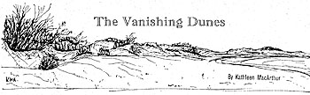
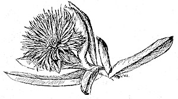
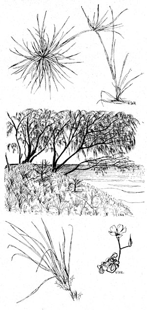
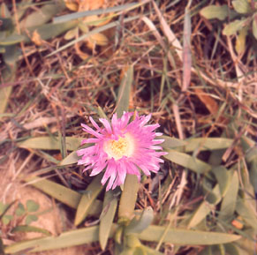
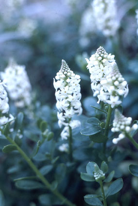
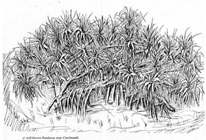
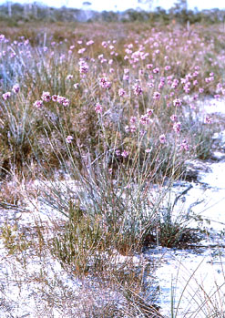

- Vanishing habitat
- Vanishing dunes
- Kawana wallum
- Dunnycan Park
- How it was in the 70s
- Tooway Creek
As early as 1963 Kathleen McArthur wrote about vanishing habitat. Her article ‘Vanishing dunes’ appeared in the first edition of WPSQ’s Wildlife magazine (published now as WILDLIFE Australia Magazine), highlighting the sand dunes between Currimundi Lake and Point Cartwright, largely untouched in those days.
Kathleen chose to describe them in a way that would inform future generations of their beauty and diversity, for she considered them threatened and vulnerable. Today some of the area remains, but no longer as it was.
Similarly the magnificent wallum plains across Kawana have mostly disappeared, despite much work to protect them. Encroachment of housing and industry has watered down the viability of bushland reserves along Tooway Creek. In Watson Park at Shelly Beach, regeneration of original species clearfelled by an earlier council has since occurred, following WPSQ and community pressure on council to develop an informed management plan.
© WPSQ, Sunshine Coast & Hinterland Inc
Wildlife [now WILDLIFE Australia Magazine] June 1963
THE VANISHING DUNES
By Kathleen McArthur
We have no more than eighty miles of unprotected beach in Queensland. It lies between Double Island Point and the border. To the north of it is Frazer (sic) Island and beyond that the Barrier Reef, which gives a measure of protection to most of the State’s coastline. Of this limited extent, the only stretch of mainland beach not either spoiled or threatened is from Noosa Bar to Double Island Point.
The most popular beaches have long since lost their sand dunes and all the others are threatened by ‘development’. No local authority or government has yet seen fit to take measures to preserve beach dunes. Rather are they inclined to bulldoze them out of existence for the purpose of making roads, parking areas or building sites. Shire councillors and members of parliament do not accept responsibility for the destruction of these useful natural features. If any damage is ever admitted, it is put down to erosion from cyclonic conditions.
Beach dunes have evolved as natural buffers between the land and the force of the sea. They provide the upward sweep needed to exhaust the waves and create the upsurge of wind that will rise above the vegetation. Certainly they block the view of the beach from behind, and tourists apparently cannot be expected to descend from their coaches and cars when bulldozers can so easily push the dunes down. So our seascapes are spoiled in the holy name of trade. We have condoned it. Will posterity excuse us?
Time and circumstance have delayed for several years the despoiling of that stretch of beach between Currimundi and Point Cartwright, so let us go there and see it as our descendants might see it, were we wiser.
Here are five to six miles of beach, almost straight, with several small outcrops of rock to break the monotony of line and add interest for the wanderer. To walk from Currimundi to Point Cartwright and back while the tide is low means there can be little dallying to explore. To walk on the beach when the tide is high can be hard going, so it is recommended that a whole day be devoted to it. The northern third is steeply shelving beach of heavy, gritty sand that is tiring at any tide. The surf there is dangerous and to be avoided.
Point Cartwright gives its visitors a pleasant picnic spot with 360 degrees of good viewing, from Moreton Bay to the Glasshouses in the south, to Noosa beyond Mount Coolum in the north, Buderim backed by the Blackall Range in the west and the Pacific with its ships to the east. The only scar on the landscape is a nearby area of bulldozed sand that is bleak, shifty and near lifeless.
It is the southern end, both in the dunes, behind them in the heathland and on the wildflower plain that the greatest interest lies. The plain provides a variety of wildflowers all the year round, with a glorious display in August and September. In November, December and January the Christmas Bells bloom there, though only in exceptional seasons are they in such numbers as to be thrilling to see. There grow Dampiera stricta in abundance and of a blue so deep it is royal. In the summer season are green and purple Hyacinth Orchids, those saprophytes defying cultivation. The visitor may find himself alone amongst the flowers, but must not think he can safely take a bunch of blooms from the area. Thousands of visitors each year see this display and the only legal way to take wildflowers from the area is in the camera. Take wildflowers in your camera and you will have them forever.
It is hoped by those who value this area for its wildlife that one day it will be declared a sanctuary.
One reason for this corner being such good wildflower country is its protection by the dunes from prevailing winds. When the lake breaks out and flows to the sea, the sand-spit may be washed away but soft black rock prevents its cutting into the dunes beyond a certain point. The first dry season will close up the entrance once more.
One can study the dunes from the tide’s limit to the plain beyond. First are the long runners of Beach Spinifex (Spinifex hirsutus) and Goatsfoot (Ipomoea pes-caprae). The work of these two species is of the highest importance. They hold the sand together in their roots and catch the drifting sand in their leaves. In early summer the roly-poly seeds of the Beach Spinifex are blown about, sometimes into the water to be washed up in other areas and sometimes higher into the dunes to take root and run, as a new generation, to the sea, thus replacing the parent plants. It is in such places the little Dotterel will lay her eggs without any nest-making. So watch your step there! If the parent bird is seen doing the broken-wing act or trying to lead you away, you will have warning. Be watchful anyway, for the parents may be off hunting.
Higher up, the Sheoaks grow. These graceful, waving shade-giving trees (Casuarina equisetifolia) are the predominant feature of the dunes. Apart from the Pandanus (also called Native Breadfruit or Screw Palm), which prefers the headlands, the Sheoaks are the first line of defence against the wind. Theirs is a passive resistance. They curb the strength of the wind, letting it seep through with constant sighing. There is no other tree to take its place on these unprotected shores. When such places are being replanted, it should be the first to go in. With its sparse foliage of grey-green needles it does not block the view; it enhances it.
Flitting through the Sheoaks are the Mistletoe birds, those handsome little creatures of red and blue-black. There too, is the Rainbow bird whose nest is at the end of a tunnel in the sand, the Brown Honeyeater, too, and up and down from grass to trees, ever on the move and twittering are the Fairy Wrens. In this area there are two Fairy Wrens, the Red-backed and Variegated. I cannot help but think they sometimes cross-breed, for I have seen, on two separate occasions, years apart, the blue species with a red saddle. They are not very shy birds and when picnicking on the dunes their curiosity will draw them close.
Behind the shelter of the Sheoaks are the Banksias (Banksia integrifolia), which, when in bloom, seem to attract more birds than any other trees on the coast. One moment they will be filled with busily silent Greenies and Bluies (Scaly-breasted Lorikeets and Rainbow Lorikeets), which will move out as a flock with deafening screeches. All the many different Honeyeaters of the area will take their fill of nectar. Possibly the most beautiful of these is the little Scarlet Honeyeater.
Down the leeward slopes of the dunes grow those trees and shrubs which can stand all the harsh and poor conditions of drift sand, except the wind. There, Kooni (Canthium coprosmoides), either as a scrub or small tree will display its small, white, star-shaped flowers or its berries in various colours, so loved by the Mistletoe bird. There is Tuckeroo (Cupania sp.), and Frazer Island Apple (Acronychia imperforata). Nearing the bottom of the slopes are Paperbarks (Melaleuca leucadendron), and Red Ash (Alphitonia excelsa) joining with all the others from above in a tightly-packed community. Before spreading out on to the plain are the Old Man Banksias (Banksia serrata) and Wattles (Acacia cunninghamii). All this growth provides the happiest hunting ground for birds of many kinds.
The most surprising aspect of the dunes, composed as they are of only drift sand and a limited amount of humus, is the ground cover of wildflowers. The Goatsfoot has large mauve convolvulus-like flowers, mostly in summer. The deep-pink Pigface (Carpobrotus aequilaterus) has flowers on it all year through, not opening out well on cold days. Beach Stackhousia (Stackhousia spathulata), with its earthy scent, begins to flower in Spring. There is Sweet Wattle (Acacia suaveolens) and the humble pink Emilies (Emilia sonchifolia) in winter, while all through the year may be seen those two flowers, the colours of which so nicely complement each other, the bright yellow Twining Guinea-flower (Hibbertia scandens) and the blue Scented Fan-flower (Scaevola suaveolens). The Fan-flower makes a wonderful showing in the spring months. Yellow Wood Sorrel (Oxalis corniculata), pink Beach Bean (Canavalia rosea), and the blue Dianella add interest. One of the best-known flowers on the beach is the Evening Primrose (Oenothera drummondii), because it has the height of its season in midsummer holiday time. This is an introduced plant.
The keen-eyes will find many more flowers and birds than are mentioned here. While scanning the ground for flowers do not neglect to look up to see that magnificent bird, the White Breasted Sea Eagle. There is a pair of them in the area. The sky-gazer may also see the Whistling Kite and the Red-backed Sea Eagle, while sea and shore birds provide yet another field of observation.
It is possible to be lucky enough to see a Wallaby and a Spiny Anteater.
Are we not very stupid to allow this wonderland of wildlife to be replaced by what is, as yet, quite unnecessary sub-division?
Reproduced with permission of Hugh McArtthur
Kathleen McArthur Slide Collection
© WPSQ, Sunshine Coast & Hinterland Inc
Nambour Chronicle 17 September 1965
Bushland and Seashore
KAWANA ISLAND WILDFLOWERS
Everywhere I go this springtime, people stop me to s ay, ‘Have you seen the wildflowers along the Mooloolaba road?’ (or the ‘Caloundra Road’, depending on where the speaker lives). Suddenly, everyone is aware of them. A wonderland has been provided free. There is excitement and surprise.
ay, ‘Have you seen the wildflowers along the Mooloolaba road?’ (or the ‘Caloundra Road’, depending on where the speaker lives). Suddenly, everyone is aware of them. A wonderland has been provided free. There is excitement and surprise.
Twelve years ago I tried to have that wildflower area reserved as a National Park but was informed it was too valuable for development. Yes, I have seen them this year as I have seen them every year. The only difference being that before the road was put through, they were safe from vandals who pick and dig them up for transplanting into their gardens.
Queensland has a great wealth of wildflowers both in landscape display and in the variety and interest of the species, but in the past there has been little interest shown in them. While tourists every year flock to Western Australia on highly organised tours, they have not bothered to walk a few miles to recognise the great wealth of flora at home. Nothing has been done through the media of education and publicity to inform the Queensland public about its wildflowers.
Changed ViewThe opening of this road seems to be changing the view that wildflowers are exclusive to the west. It is rather late in our history for this change of heart. The whole of that area, except a small reserve in the south-east corner, will lose its wildflowers as the plans for its development involve the digging of canals and the use of the spoil in raising the level of building sites. This will completely change the habitat, undoubtedly destroying these plants which require the highly specialised conditions of the wallum swampland. It is to be hoped that before the change occurs, every single, man, woman and child of us will make some effort to look at the beauty of this landscape and look at each individual flower and remember. Yes, let us remember that we, the members of our generation are responsible for the destruction of a truly remarkable section of our national heritage.
The question of the future will be ‘Had we the right?’ and the answer will certainly be ‘No!’ In perpetrating this wickedness we sin against ourselves, our children and our Creator.
Kathleen McArthur
Wildlife Preservation Society of Queensland, Caloundra Branch
Reproduced with permission of Sunshine Coast Newspapers
© WPSQ, Sunshine Coast & Hinterland Inc
Sunshine Coast Weekly Advertiser 6 November 1974
Wildlife and Landscape
WHAT ARE THE COUNCIL’S INTENTIONS?
On page 47 of the Sunshine Coast Advertiser o f 30th October 1974 the Landsborough Shire Council advertised a proposed amendment to the Town Planning Scheme for part of the Shire of Landsborough, by ‘excluding from Parks and Recreation zone thereof, land containing 1 hectare 6,1874 [sic] square metres, described as Subs. 2, 3, 4 and 5 of Section 11A of Resub. 2 of Sub B of Portion 13A, Parish of Bribie, County of Canning, fronting Russell Street, Caloundra, and by including such land in the ‘Residential–Medium Density’ zone of the said Planning Scheme’. Objections in writing may be lodged before December 4th, 1974.
f 30th October 1974 the Landsborough Shire Council advertised a proposed amendment to the Town Planning Scheme for part of the Shire of Landsborough, by ‘excluding from Parks and Recreation zone thereof, land containing 1 hectare 6,1874 [sic] square metres, described as Subs. 2, 3, 4 and 5 of Section 11A of Resub. 2 of Sub B of Portion 13A, Parish of Bribie, County of Canning, fronting Russell Street, Caloundra, and by including such land in the ‘Residential–Medium Density’ zone of the said Planning Scheme’. Objections in writing may be lodged before December 4th, 1974.
Presumably the Shire Council intends selling this land, which at the present time forms approximately half of George Watson Park. Understandably the Wildlife Preservation Society of Queensland is opposed to any reduction of parkland acreage, of which there is already an inadequate amount. It would never condone such an act.
However, if it is the intention of the Council to use the purchase money thus obtained for the purpose of resuming and paying compensation for the 5-acre Sub. A below this park, which has been the subject of much discussion and correspondence over the past twelve years and which extends to ‘high-water-mark’ and is quite unsuitably zoned ‘Caravan Park’, we would reconsider our objection.
If this should be the intention of the Council it would seem they are either under-valuing Subs. 2, 3, 4 and 5 or they are planning to make money on the deal for other uses. To that we object.
We therefore call upon the Landsborough Shire Council to publicly state its intentions with respect to this rezoning, and to do so leaving sufficient time to those members of the public who are interested to lodge objections.
Kathleen McArthur
Wildlife Preservation Society of Queensland, Caloundra Branch
Sunshine Coast Weekly Advertiser 27 November 1974
SAD STORY OF ‘DUNNYCAN PARK’
The story o f Watson Park, Caloundra was ‘a sad one that needs to be retold’, said the Secretary of the Caloundra Branch of the Wildlife Preservation Society (Mrs. Kathleen McArthur) this week.
f Watson Park, Caloundra was ‘a sad one that needs to be retold’, said the Secretary of the Caloundra Branch of the Wildlife Preservation Society (Mrs. Kathleen McArthur) this week.
She said the park had been transformed ‘from a lovely timbered reserve where wildflowers abounded, to a brick and concrete jungle in 11 short years’. ‘It is disgusting Local Government,’ she said. ‘We would be better off with an administrator with good taste.’
Mrs. McArthur was registering her objection to a proposal by the Landsborough Shire Council to rezone part of the western section of the park from ‘parks and recreation’ to ‘residential––medium density’.
‘The Parish map of 1951 shows this area as R. 655 and this is repeated on the 1965 map,’ she said. ‘Now we are told by Cr. R.G. Bell that it is Council freehold (Advertiser 20.11.74). When was the status of this land changed from ‘reserve’ to ‘freehold’? Or was it ever changed?
Mrs. McArthur said one of the first actions of the Caloundra Branch of the Wildlife Preservation Society after its inauguration in 1963 was to request the Council to allow the Society to manage the area for the greater enjoyment of people. ‘All the Society wanted was to remove a few dead trees. In reply it was told that the £400 needed was not available,’ she said. ‘Shortly afterwards the reserve was clear-felled, stacked, burnt, ploughed and harrowed––using peanuts for finance presumably.
‘That was not all. Trees were planted in neat rows with ample space for the roaring southerlies to hinder their growth and for mowing to prevent any untidy regeneration. These trees had been advanced in disused dunny-cans which were then left in tidy rows beside the trees: hence, with fun for all, the park being dubbed ‘Dunnycan Park’.
‘Now we are told it is not much of a park and would be improved by medium-density housing,’ Mrs. McArthur said.
Reproduced with permission of Sunshine Coast Newspapers
© WPSQ, Sunshine Coast & Hinterland Inc
Lunch Hour Theatre Script Caloundra, May 1976 or 1977, & March 1979
Caloundra, May 1976 or 1977, & March 1979, pp 17, 18, 19
[On the variety and beauty of native plants in and around Caloundra, and the wider acceptance of re-planting native species]
From the pandanus on the rocky headlands to the Beech trees on the Mooloolah River, which is the Aboriginal ‘Caloundra’, the vegetation is extremely diverse. There is the tropical dune flora of soughing Sheoaks, silver Spinifex grass, runners of Goatsfoot and Beach Bean helping the Spinifex to bind the sand and throwing their flowers around to attract attention to their good works. There are Banksias large and small, quietly coloured or glowing golden. There is the wallum heath and its commercially valuable honey flow and its grand colour display of winter and spring and its flaming Christmas Bells in summer. There are white-trunked gum trees and the summer flowering bloodwoods, gullies of maiden hair and rainforest trees, swamps of yellow hibiscus in bloom all the year under Paperbarks or Cabbage-trees. Waterholes wear scented blue Waterlilies with a miniature sun at their centres. Mangrove foreshores teach a lesson that not everyone will learn. Scribbly gums, Tallow-woods, Blue gums and Grey gums, Box and Turpentine mark the path all the way out to the Mooloolah River’s rainforest verges, where there are still a few Beech trees after which the Aborigines named the area, and where Lilly-pillys drop their bright pink fruit on to the quiet waterholes…
…Caloundra is not backward in the sense of being behind other seaside resorts; quite the opposite is the truth. Caloundra, perhaps more than any other seaside resort has cultivated its indigenous flora. To give the point an Irish flavour––we are backward in not being much further forward. To be in keeping with our residents, we should be. Twenty years ago, Banksias, Sheoaks and Pandanus were not planted, and just ten years ago there would not have been a chance of Paperbarks being planted in public places. With such environmental progress there is hope that in time the eroded estuarine foreshores will be reconstituted through the planting of Mangroves, an idea that at the present time is regarded as undesirably radical. Along with Banksias, Sheoaks, Pandanus and Paperbarks, Mangroves will be accepted in time.
Reproduced with permission of Hugh McArtthur; courtesy of Caloundra City Libraries
Kathleen McArthur Slide Collection
© WPSQ, Sunshine Coast & Hinterland Inc
Lunch Hour Theatre Script Wildflowering in June, [no date]
Wildflowering in June, [n. d.], pp 19, 20
[On the effect of drought on wildflowers: Tooway Creek and Currimundi]
18 August, back at Caloundra:
Caloundra at present provides a most interesting study of the effects of drought conditions on wild-flowers.
In principle, the same applies to all the vegetation. Going first to Tooway Creek flats I was greeted by the continuous and loud humming of bees that were busily gathering a rich store. My eyes at once gathered in these riches, the bounty and the beauty. There were the Bush Peas, some yellow with red centres, others plain yellow. There were masses and masses of these to which the bees were paying particular attention. Slightly paler in colour among the peas, were bushes of Phyllota, and paler still the Wedge Pea and in amongst all this yellow were the white Pimelea and Devil’s Rice, the mauve Vanilla Lilies and red Boronia and many others. Almost everything seemed to be flowering and the sight of it all was gay, refreshing and soul-stirring. Not a breath of drought! This is a comparatively small area, perhaps less than ten acres and is almost surrounded by trees, rising ground and a row of homes. The dry westerlies barely stir it.
It is very different out on the wallum flats between Dicky Beach and Currimundi. Although a ridge to the west must afford these flats a degree of protection, the area is so large the wind is able to gather speed as it crosses over it. Flowering there is almost non-existent, even such toughies as the ground orchids, which conserve their own moisture in tubers, are hard to find, and when found are in very poor condition. Pink Caladenias, our Pinkies, which were countless before we went away, have gone; Stewart’s Foxes too. There are but a few miserable White Doubletails, only half normal size. Vanilla Lilies, with their everlasting flower-heads, are hanging on partly dehydrated stems––simply dying of thirst. It makes one sad and thoughtful.
Reproduced with permission of Hugh McArtthur; courtesy of Caloundra City Libraries
Kathleen McArthur Slide Collection
© WPSQ, Sunshine Coast & Hinterland Inc